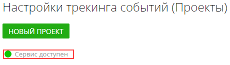
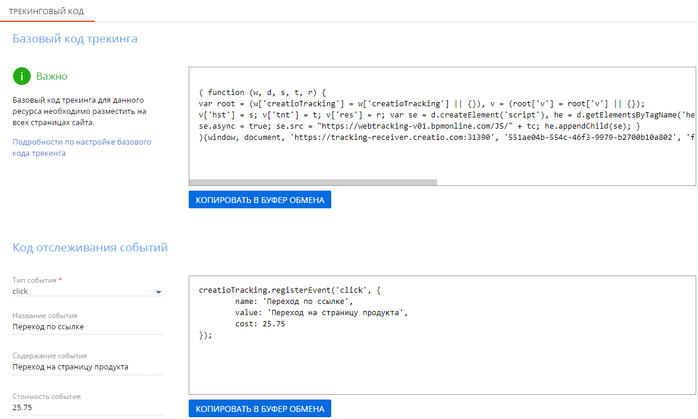

Для работы функциональности трекинга в Creatio вам необходимо на сайте, с которого вы хотите получать данные, иметь настроенную и зарегистрированную в Creatio посадочную страницу. Подробно о создании и настройке лендингов в Creatio читайте в статье Настроить лендинг — общая последовательность шагов.
Шаг 1. Включить функциональность трекинга
Для включения в вашем приложении Creatio функциональности трекинга событий сайта обратитесь в службу технической поддержки. Обратите внимание, что в приложениях, развернутых on-site, должна быть настроена возможность подключения к внешнему облачному сервису.
После включения функциональности убедитесь, что в вашем приложении заполнены системные настройки “Адрес Identity сервера” (код “IdentityServerUrl”), “Идентификатор приложения для Identity сервера” (код “IdentityServerClientId”) и “Секретный ключ для Identity сервера” (код “IdentityServerClientSecret”). Если данные системные настройки не заполнены, то обратитесь в службу поддержки Creatio.
Шаг 2. Настроить в Creatio список отслеживаемых страниц
- Перейдите в дизайнер системы, например, по кнопке
 в правом верхнем углу приложения. В группе “Импорт и интеграции” перейдите по ссылке “Настройка сервиса трекинга событий”.
в правом верхнем углу приложения. В группе “Импорт и интеграции” перейдите по ссылке “Настройка сервиса трекинга событий”. - На открывшейся странице проверьте доступность сервиса трекинга. Если сервис недоступен, то обратитесь в службу поддержки Creatio.
Рис. 1 — Индикатор доступности сервиса трекинга событий сайта
- Нажмите кнопку Новый проект.
- На открывшейся странице:
- Введите название проекта, например, “Просмотр продуктов на сайте”.
- При необходимости, введите описание проекта.
- Укажите ответственного.
- Примените изменения. Только после этого вы сможете добавить ресурсы трекинга — страницы, для которых необходимо отслеживать события сайта.
- Откройте сохраненный проект.
- В области Ресурсы трекинга нажмите .
- На открывшейся странице заполните:
- Название — название ресурса, например, “Сайт мероприятия для СНГ”.
- ID (URL для web-сайтов) — адрес ресурса, для которого необходимо отслеживать события, например, www.my-company.com.
- Для того чтобы события данного ресурса отслеживались и передавались в Creatio, установите для ресурса признак Активный.
- Нажмите кнопку Применить. После этого для ресурса будет сгенерирован базовый трекинговый код, который после добавления в HTML-код страницы сайта позволит отслеживать ее посещение пользователями. Подробнее >>>
При необходимости вы можете настроить отслеживание любых событий сайта. Подробнее >>>
Повторите п. 7–10, чтобы добавить в проект ресурсы для каждого сайта, на котором необходимо отслеживать события.
Шаг 3. Настроить трекинг пользовательских событий сайта
Вы можете настроить для страниц вашего сайта трекинг не только просмотров, но и любых пользовательских событий, например, переходов по ссылкам, заполнения формы обратной связи, проигрывания видео и т. п. Для этого вам необходимо продумать перечень событий, которые вы хотите отслеживать, сформировать для них коды отслеживания и добавить эти коды к элементам страниц сайта (ссылкам, кнопкам, формам и т. д.).
Чтобы сгенерировать коды отслеживания пользовательских событий:
- Откройте страницу ресурса.
- В области Код отслеживания событий заполните:
- Тип события — действие клиента, которое необходимо отслеживать. Например, переход по ссылке (click), заполнение полей формы (fill_field), оформление заказа (start_checkout) и т. п.
- Название события — значение, которое отобразится в списке событий сайта на странице лида или контакта. Например, “Переход по ссылке” или “Добавление товара в корзину”.
- Содержание события — фактическое описание действия, совершаемого клиентом на сайте. Например, “Переход на посадочную страницу” или “Начало оформления заказа”.
- Стоимость события — число, определяющее значимость данного действия пользователя. Значение в поле может быть как целым, так и дробным.
-
Скопируйте полученный код и разместите его в HTML-коде на страницах вашего сайта, на которых должно отслеживаться данное действие. Подробнее >>>
Обратите внимание, что код отслеживания пользовательских событий, в отличие от базового кода трекинга, в системе не сохраняется. Если вы не планируете использовать его сразу, то сохраните в HTML-коде страницы или текстовом редакторе.
- Сгенерируйте коды отслеживания для всех пользовательских событий, которые необходимо отслеживать на данном ресурсе.
Рис. 2 — Пример сгенерированных трекинговых кодов
Шаг 4. Встроить трекинговый код на ваш сайт
Чтобы использовать функциональность трекинга событий сайта, необходимо разместить базовый трекинговый код в разметке каждой страницы вашего сайта, а коды отслеживания событий — только в тех страницах, где будут происходить данные события.
Встроить базовый трекинговый код
На странице ресурса скопируйте базовый трекинговый код и разместите его в HTML-код на каждой странице вашего сайта. Вы можете расположить код в любом месте HTML-разметки до закрывающего тега в конце страницы </body>. Если код будет размещен только на некоторых страницах веб-сайта, то Creatio не сможет узнать обо всех переходах потенциальных клиентов на ваш сайт.
Трекинговый код, который размещается на сайте, использует скрипт, находящийся в облаке Creatio. Это означает, что когда пользователь заходит на страницу вашего сайта, браузер пользователя обращается к сервису трекинга Creatio за актуальной версией скрипта, и с его использованием создает cookie-файлы. Чтобы браузер мог обратиться к сервису трекинга, необходимо добавить в HTML-код всех страниц, вместе с базовым трекинговым кодом вызов скрипта:
Этот код можно скопировать в Creatio на странице лендинга, связанного с ресурсом, на котором вы настраиваете трекинг.
Встроить код отслеживания событий
Разместите трекинговые коды пользовательских событий в HTML-код тех страниц, где необходимо отслеживать эти события. В отличие от базового трекингового кода, коды для отслеживания пользовательских событий необходимо связывать с определенными элементами веб-страницы, например, полями формы, кнопками, гиперссылками. Это можно сделать непосредственно в коде элемента или при помощи JavaScript.
Например, для отслеживания нажатия кнопки, добавьте трекинговый код непосредственно в элемент HTML:
Или добавьте трекинговый код в HTML-код страницы, а в элемент — скрипт вызова кода:
После выполнения персональных настроек трекинга событий сайта в Creatio будет доступна история действий клиента. Результаты трекинга вы сможете просмотреть на вкладке История страницы лида и связанного с ним контакта.